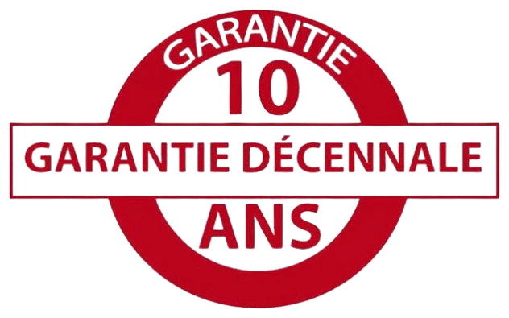

NOS SERVICES

RÉPARATION TOITURE
Confiez la réparation de votre toiture à Argens-Minervois à nos couvreurs qualifiés pour stopper rapidement les fuites et garantir une étanchéité durable face aux intempéries.
PLUS D'INFONETTOYAGE & DÉMOUSSAGE TOITURE
À Argens-Minervois, protégez votre toit contre la mousse et les salissures grâce à un nettoyage professionnel qui prolonge sa durée de vie et améliore son aspect.
PLUS D'INFOISOLATION TOITURE
Améliorez le confort thermique de votre habitation à Argens-Minervois en optant pour une isolation performante qui réduit vos factures d’énergie toute l’année.
PLUS D'INFOÉTANCHÉITÉ TOITURE
Préservez votre maison à Argens-Minervois des infiltrations d’eau avec une étanchéité de toiture adaptée et durable, conçue pour résister aux intempéries.
PLUS D'INFOPEINTURE TOITURE
Redonnez un coup d’éclat à votre toit à Argens-Minervois avec une peinture de qualité qui protège durablement et embellit votre habitation.
PLUS D'INFOPOSE DE GOUTTIÈRES
À Argens-Minervois, canalisez efficacement les eaux pluviales grâce à la pose de gouttières robustes qui protègent vos façades et vos fondations.
PLUS D'INFOPOSE DE FENÊTRES DE TOIT
Apportez plus de lumière et de confort à vos combles à Argens-Minervois avec l’installation de fenêtres de toit Velux réalisées par des professionnels.
PLUS D'INFO
Réparation de toiture à Argens-Minervois : Confier la réparation de toiture à Argens-Minervois à des experts est essentiel pour éviter toute infiltration et assurer la solidité de votre habitation. Nos couvreurs interviennent rapidement pour remplacer des tuiles cassées, réparer les fuites, renforcer les solins ou traiter les parties endommagées. Grâce à notre savoir-faire, nous garantissons une toiture étanche et résistante aux intempéries à Argens-Minervois, afin de protéger durablement votre maison.
Nettoyage et démoussage de toiture à Argens-Minervois : Avec le temps, mousses, lichens et algues fragilisent les toitures à Argens-Minervois. Un nettoyage et un démoussage réguliers permettent de prolonger la durée de vie de votre toit tout en améliorant son apparence. Nos couvreurs à Argens-Minervois utilisent des techniques adaptées pour éliminer en profondeur les impuretés et redonner à votre toiture propreté, solidité et résistance face aux intempéries.
Isolation de toiture à Argens-Minervois : L’isolation de toiture à Argens-Minervois est une étape clé pour améliorer le confort thermique et réduire vos factures d’énergie. Une toiture bien isolée permet de conserver la chaleur en hiver et la fraîcheur en été, tout en diminuant les nuisances sonores. Nos spécialistes en isolation interviennent à Argens-Minervois avec des matériaux performants, garantissant une efficacité énergétique durable et un cadre de vie agréable.
Étanchéité de toiture à Argens-Minervois : Préserver l’étanchéité de votre toiture à Argens-Minervois est indispensable pour éviter les infiltrations et protéger votre logement. Qu’il s’agisse de tuiles, d’ardoises ou de zinc, nos couvreurs appliquent des solutions adaptées à chaque type de toiture. Grâce à notre expertise, nous assurons une protection fiable contre l’humidité et les intempéries, afin de garantir la longévité de votre couverture à Argens-Minervois.
Peinture de toiture à Argens-Minervois : La peinture de toiture à Argens-Minervois redonne éclat et résistance à votre couverture. En plus d’embellir votre maison, elle crée une barrière protectrice contre l’humidité, les UV et les conditions climatiques difficiles. Grâce à nos peintures spécifiques, votre toit à Argens-Minervois reste protégé, esthétique et durable dans le temps.
Installation de gouttières à Argens-Minervois : L’installation de gouttières à Argens-Minervois est essentielle pour une bonne évacuation des eaux pluviales. Des gouttières bien posées évitent les infiltrations et protègent les fondations ainsi que les façades de votre maison. Nos couvreurs réalisent la pose et la rénovation de gouttières en zinc ou PVC à Argens-Minervois afin de garantir une longévité optimale et une protection efficace.
Installation de fenêtres de toit à Argens-Minervois : L’installation de fenêtres Velux à Argens-Minervois est idéale pour apporter lumière naturelle et ventilation à vos combles. Nos spécialistes assurent une pose soignée, parfaitement étanche, qui valorise votre habitation et améliore votre confort intérieur. Grâce à notre expertise, vos combles à Argens-Minervois deviennent plus lumineux et agréables à vivre.
UNE ÉQUIPE EXPÉRIMENTÉE ET DES TECHNOLOGIES MODERNES À Argens-Minervois
Notre équipe de couvreurs à Argens-Minervois met à votre service son savoir-faire ainsi que des outils de pointe pour garantir des prestations fiables et durables. Réparation, nettoyage, isolation ou étanchéité de toiture : chaque intervention est réalisée avec soin. Vous pouvez également nous confier vos travaux de peinture de toiture, la pose de gouttières ou encore l’installation de fenêtres de toit Velux à Argens-Minervois pour améliorer le confort et l’esthétique de votre habitation.
NOS TARIFS TRANSPARENTS À Argens-Minervois
DES PRIX ADAPTÉS À VOTRE BUDGET À Argens-Minervois
Basés dans l’Aude, nous proposons des services de couverture de haute qualité à Argens-Minervois à des prix compétitifs. Notre priorité est de répondre à vos besoins tout en respectant votre budget. Pour obtenir un devis précis et personnalisé, remplissez notre formulaire en ligne ou contactez-nous directement au 06 21 81 16 63. Nos conseillers sont disponibles pour vous accompagner et répondre à toutes vos questions.
DEVIS GRATUITPOURQUOI FAIRE CONFIANCE À Renov façade toiture À Argens-Minervois ?
Choisir notre entreprise de couverture à Argens-Minervois, c’est opter pour un travail sérieux, soigné et durable. Nos artisans couvreurs interviennent pour la réparation, l’entretien ou la rénovation complète de votre toit. Grâce à une expérience confirmée, nous assurons des prestations de qualité qui garantissent la sécurité et la longévité de vos toitures à Argens-Minervois.
Dalep 2100 – Nettoyage de toiture en promotion à Argens-Minervois

Profitez d’un nettoyage complet et d’un démoussage de toiture à Argens-Minervois à partir de seulement 7 €/m², avec en plus le traitement hydrofuge offert. Nous utilisons le produit professionnel DALEP 2100, qui élimine efficacement mousses et micro-organismes tout en protégeant votre toit à long terme grâce à son action hydrofuge.
UNE GARANTIE 10 ANS SUR VOS TRAVAUX À Argens-Minervois
Tous nos travaux de couverture à Argens-Minervois bénéficient d’une garantie décennale, qu’il s’agisse de réparation, de rénovation ou d’installation neuve. Cette assurance vous protège pendant 10 ans après la fin des travaux et vous garantit une tranquillité totale. Réparation de fuite, installation de Velux ou rénovation complète : nous assurons des prestations conformes aux normes et parfaitement sécurisées.
NOS CONTRATS D’ENTRETIEN À Argens-Minervois

CONTRATS PONCTUELS À Argens-Minervois
CONTRATS ANNUELS À Argens-Minervois
Pour une tranquillité d’esprit totale, nous proposons des contrats de couverture sur mesure à Argens-Minervois. Chaque intervention est détaillée : délais, étapes, coûts et garanties. Que vous ayez besoin d’une réparation ponctuelle ou d’un entretien annuel, nous assurons un suivi régulier et un service de qualité incluant réparation, nettoyage, démoussage, isolation, étanchéité, pose de gouttières et installation de fenêtres de toit à Argens-Minervois.
UNE ENTREPRISE DE COUVERTURE À VOTRE SERVICE À Argens-Minervois
Depuis plus de 20 ans, Renov façade toiture accompagne particuliers et professionnels à Argens-Minervois pour tous leurs projets de couverture. Qu’il s’agisse d’une urgence, d’une fuite ou d’un problème d’isolation, nous intervenons rapidement avec des solutions adaptées.
Nos couvreurs assurent également les réparations nécessaires à Argens-Minervois : remplacement de tuiles, amélioration de l’étanchéité, installation de Velux ou pose de gouttières pour optimiser l’évacuation des eaux pluviales. Nous réalisons aussi des travaux de démoussage et de nettoyage pour préserver la durabilité de votre toit.
Disponibles 7j/7 et 24h/24 à Argens-Minervois, y compris week-ends et jours fériés, nous proposons aussi des rénovations complètes, de l’isolation thermique et un entretien préventif afin d’éviter toute dégradation future.
NOS VALEURS
QUALITÉ
L'EXCELLENCE AU CŒUR DE NOTRE MÉTIER
Nous nous engageons à offrir un travail impeccable, alliant rigueur et savoir-faire. Grâce à notre expertise et à une écoute attentive, nous garantissons un résultat durable et une satisfaction totale de nos clients.
PASSION
L'ENTHOUSIASME AU SERVICE DE VOS PROJETS
Nous sommes animés par le plaisir du travail bien fait. Chaque projet étant unique, nous apportons une approche personnalisée, fondée sur l'écoute et des conseils avisés, pour garantir un résultat à la hauteur de vos attentes.
ENGAGEMENT
UNE PROMESSE DE RESPECT ET DE FIABILITÉ
Le respect est au centre de notre démarche. Nous veillons à préserver vos espaces et à respecter les délais, afin que vous retrouviez confort et sérénité le plus rapidement possible.
CONFIANCE
UNE RELATION SOLIDE POUR UNE SÉCURITÉ ASSURÉE
La confiance mutuelle est la clé d’un partenariat réussi. En prenant en compte vos besoins et en vous accompagnant avec transparence, nous construisons une relation durable qui valorise vos espaces et garantit votre tranquillité.